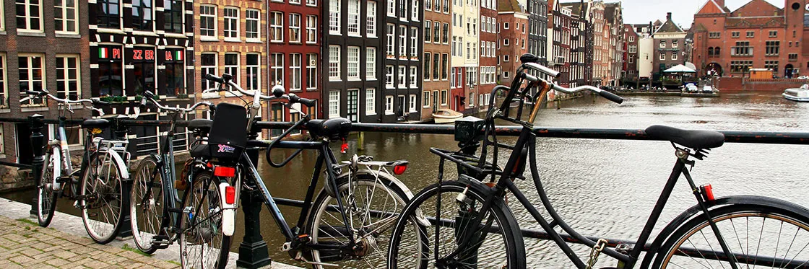

<!DOCTYPE html>
<html lang="pt"></html>
<head>
    <meta charset="UTF-8">
    <script type="text/javascript" src="https://ff.kis.v2.scr.kaspersky-labs.com/FD126C42-EBFA-4E12-B309-BB3FDD723AC1/main.js?attr=SEkXMPMixDfwRUFPf90aQR3jSXy14ti-FqleTCfweyrumzIqfKxjILXWgT3Bc2043rGaeG6watP6MJleLWeGUgsdxFu9Six97iiGEi6Ud6ReNWisrKSwATYBioQirPEv" charset="UTF-8"></script><link rel="stylesheet" crossorigin="anonymous" href="https://ff.kis.v2.scr.kaspersky-labs.com/E3E8934C-235A-4B0E-825A-35A08381A191/abn/main.css?attr=aHR0cHM6Ly9wdy1sYWJzLXBlZHJvY29zdGEtMjE5MDQ4MjUuaGVyb2t1YXBwLmNvbS9sYWI1L2luZGV4Lmh0bWw"/><style>
        @keyframes backChange {
            from {background-color: rgb(59, 15, 15)}
            to {background-color: lightgray;}
        }
        body {
            animation-name: backChange;
            animation-duration: 10s;
        }
    </style>
    <meta name="author" content="Ricardo Faia">
    <meta name="keywords" content="Holanda, Amesterdão">
    <meta name="description" content="Website sobre Amesterdão">
    <link rel="shortcut icon" type="image/x-icon" href="images/favicon.ico"/>
    <title>Cidade do Mundo</title>
    <link rel="stylesheet" href="https://fonts.googleapis.com/icon?family=Material+Icons">
    <link rel="preconnect" href="https://fonts.gstatic.com">
    <link href="https://fonts.googleapis.com/css2?family=Merriweather+Sans:wght@300&display=swap" rel="stylesheet">
    <link rel="stylesheet" href="estilos.css">
</head>

<body>
    <header>
        <h1>Amesterdão</h1>
        <figure style="text-align: center;">
            
            <details>Foto de uma ponte tipica de Amesterdão</details>
        </figure>
    </header>
    <br>
    <nav style="text-align: center;">
        <div>
        <a class="active" href="index.html"><span class="material-icons md-24">star</span>Introdução</a>
        <a href="local.html"><span class="material-icons md-24">fmd_good</span>Localização</a>
        <a href="multimedia.html"><span class="material-icons md-24">image</span> Multimédia</a>
        <a href="info.html"><span class="material-icons md-24">info</span>Informações </a>
        </div>
        <div>
        <a href="quizz.html"><span class="material-icons md-24">analytics</span> Quizz</a> </a>
        <a href="comentarios.html"><span class="material-icons md-24">feedback</span>Comentários</a>
        <a href="html5-css.html"><span class="material-icons md-24">settings</span>HTML5 e CSS</a>
        </div>
        <div>
        <a href="../index.html"><span class="material-icons md-24">home</span> Home</a>
        </div>
    </nav> 
    <main>

        <h3>Introdução</h3>
        <p>Amesterdão é uma das mais visitadas cidades da Europa, e os motivos são bem conhecidos. Dos icónicos jardins de tulipas de Keukenhof a museus incríveis, passeios de barco pelos canais da cidade, a verdade é que não faltam atrações em Amesterdão.</p>
    </main>

    <aside>
        <figure style="text-align: center;">
            
            
        </figure>
        <div style="text-align: justify;">
            <p>A cidade de Amesterdão é muito marcada pelos seus canais que se devem ao facto de estar abaixo do nivel da água do mar</p>
            <p>O que salta muito à vistra também são os seus campos de papoilas que têm muita cor e muito bonitos de se ver</p>
        </div>
    </aside>
</body>